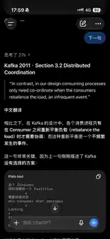
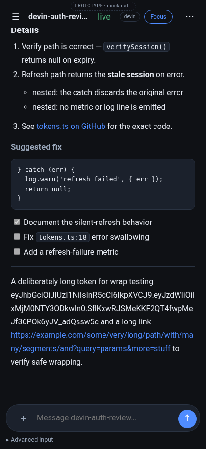

| Header height | ~54 (incl. status area) → 56 topbar + floating 16px badge |
| Side gutters | ~20 → 20 (#messages padding) |
| Body font | ~16/1.6 → 16px/1.65 (26.4px) |
| Heading scale | h1 ~26 → 23.2 (1.45em); h2 ~20.8 ✓ |
| Paragraph spacing | ~12 → 12 |
| Blockquote | serif italic, indented → Georgia/"Songti SC" italic + 3px rule |
| User turn | right-aligned bubble → max-width 82%, radius 18, right meta |
| Thinking row | "思考了 27s ›" light collapsed row → tool-card summary row (6px pad, transparent bg) |
| Composer | floating pill ~52h, radius ~26, side inset ~12 → identical structure; ↑ circular primary send |
| Bottom safe area | home indicator → env(safe-area-inset-bottom) |
| Theme | Reference is light theme; console product is dark — structure/density tracked, colors kept dark |
| System font | Reference uses SF Pro/PingFang on iOS; box renders fallback stack |
| Status bar | iOS chrome (17:59, battery) not part of the web surface |
| Chrome extras | prototype adds state chip + profile label + Focus toggle (product needs) |